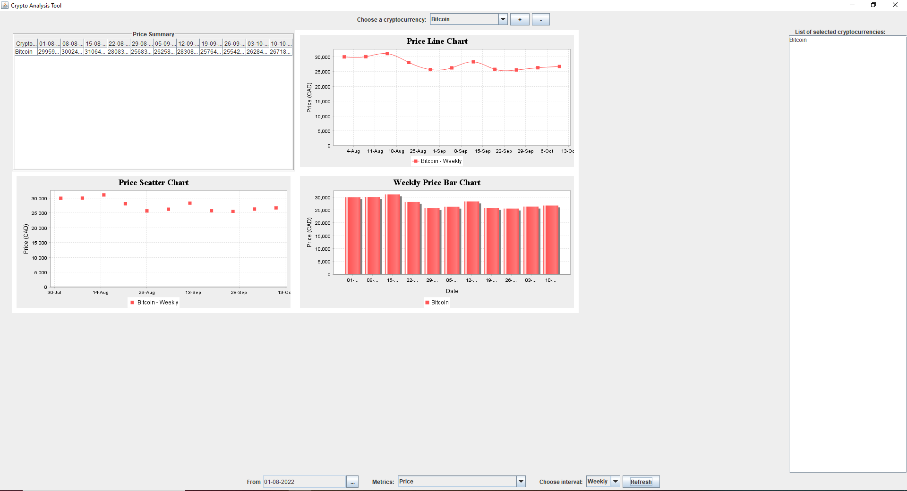

Contact

I’m interested in computer science, specifically programming, developing, and maintaining mods, games, applications, etc.
I'm also interested in the social sciences, particularly history and philosophy. In my free time I like to take walks, read, play videogames, and make mods for videogames.
Worked in numerous roles in a scarf company that I founded with other students, including management, accounting, production, sales, and marketing
Fixed errors on dozens of organization WordPress websites and Google ads accounts. Also managed, edited, and created a large variety of data spreadsheets for the organisation
Currently working on helping the development of this club's website. Work mainly focused on the home and contact pages, and was done using Javascript and CSS via the React Framework.
Made one mod that made the game more historically accurate and enjoyable for players. Made another mod adding a GUI into the game, adding more ingame debugging capabilities, as well as making debugging more flexible.

Analyzes and Displays real time data about crypto currencies. A product of group work done via Java. Allows a potential investor to better visualise and understand the situation of the cryptocurrency market.
Currently working on helping the development of this club's website.